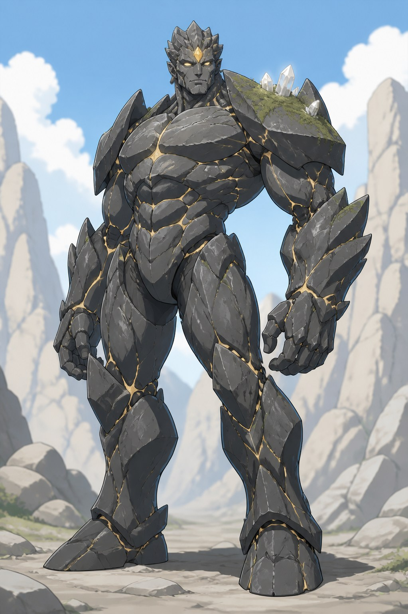
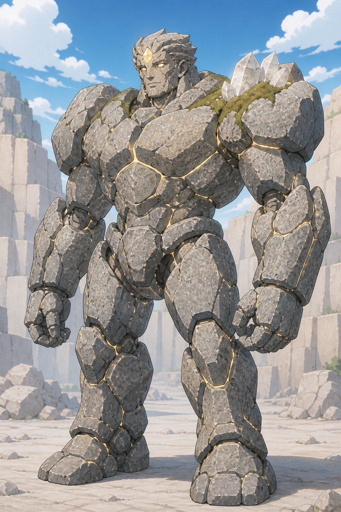
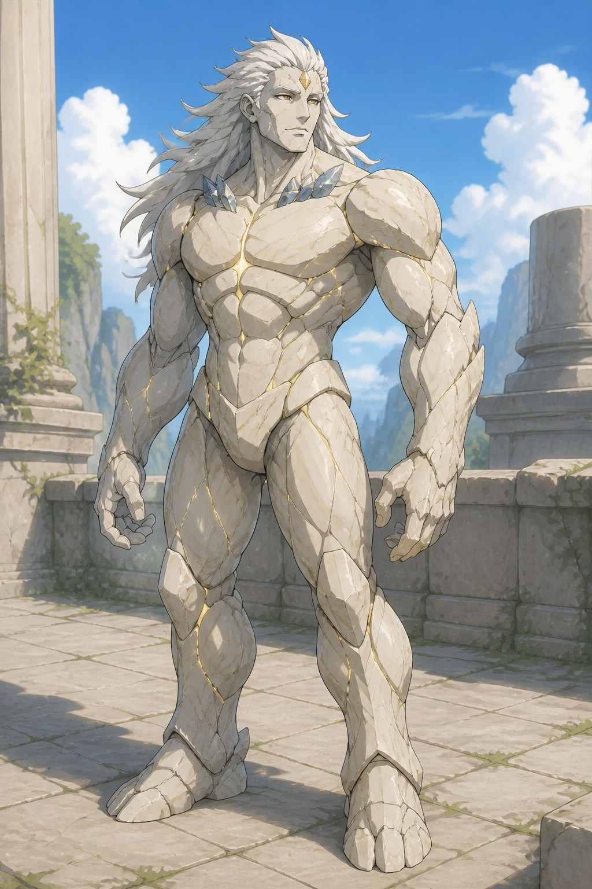
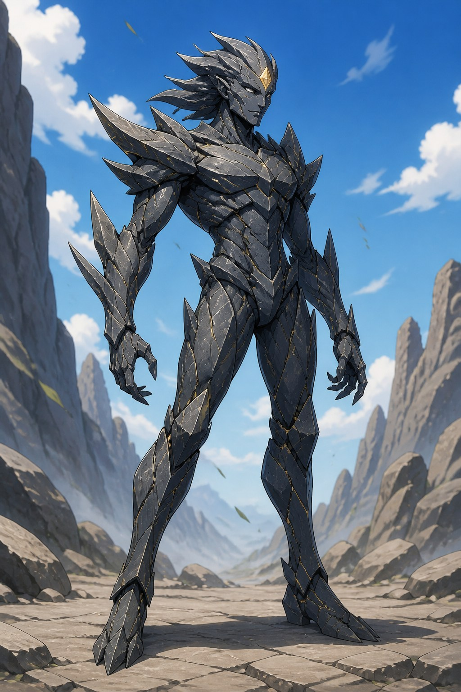
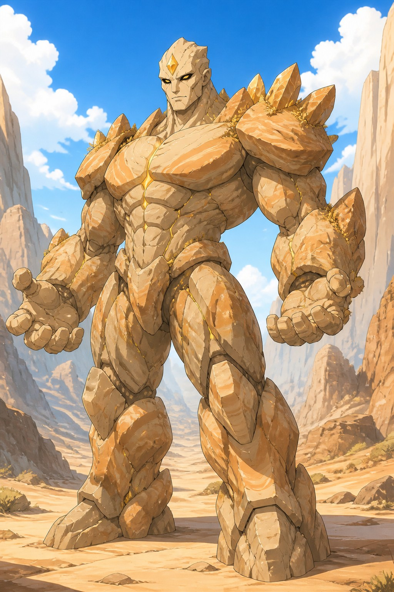
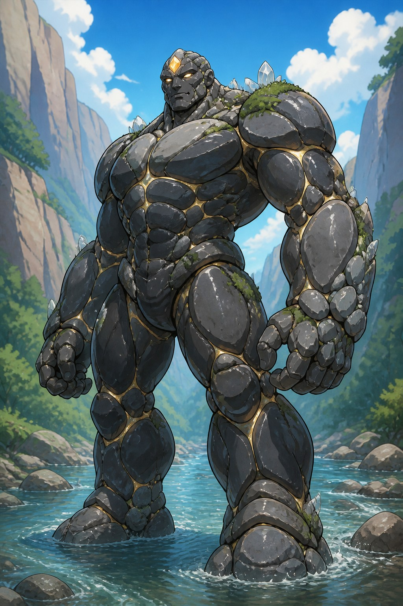
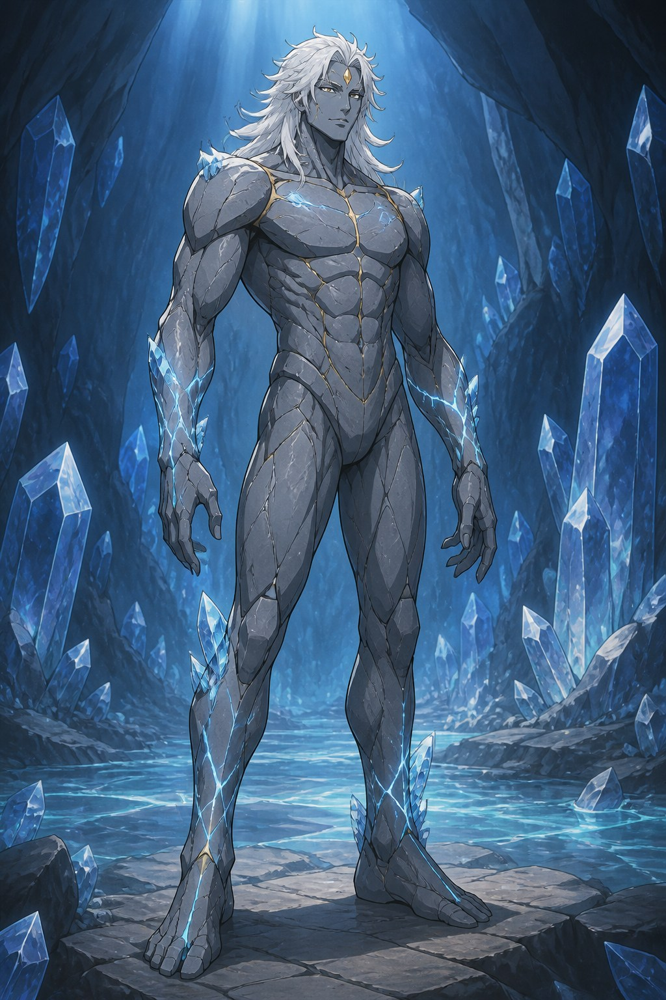
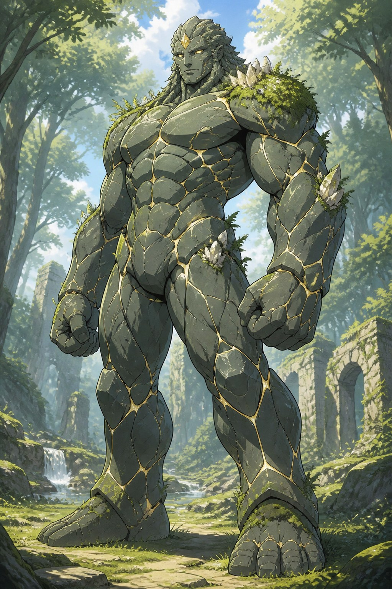
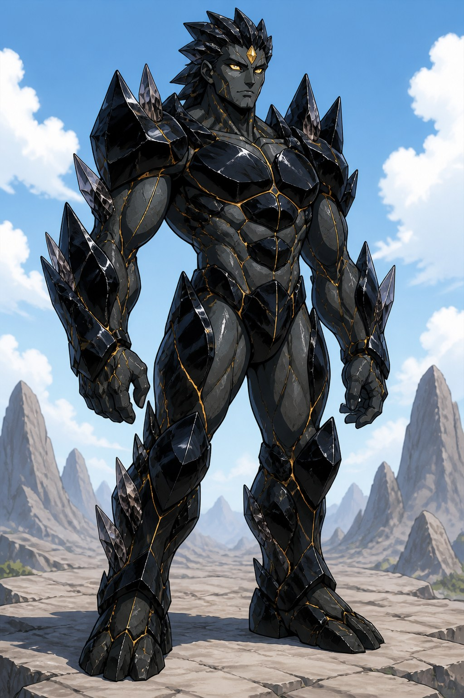
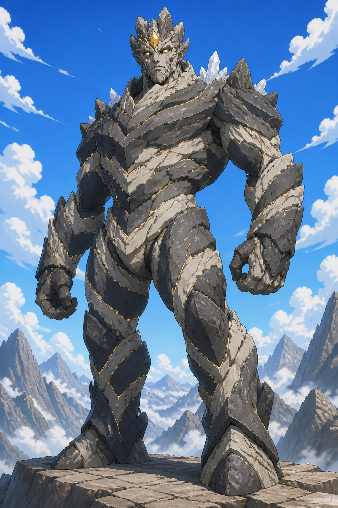

CHARACTER DESIGN LAB
골렘 대장
후보 10안
모든 안은 자연에서 태어난 인간형 돌 생명, 이마의 황금 소울스톤, 강하고 신뢰감 있는 지도자라는 설정을 공유합니다.
마음에 드는 번호를 알려주세요.
01현무암 파수꾼균형 잡힌 정통 지도자형

02화강암 성벽가장 크고 든든한 방어형

03백대리석 영웅인간형 매력과 고귀함 강조

04판암 질주자날렵하고 전투적인 속도형

05사암 수도자침착함과 절제된 힘

06강돌 수호자둥근 형태의 친근한 거구

07수정맥 군주가장 세련되고 인간적인 형태

08숲의 파수꾼자연 생명이라는 설정 강조

09흑요석 지휘관어둡고 강렬한 카리스마

10산맥 장군오래된 지층과 최고 지도자상
MERFOLK · NEXT